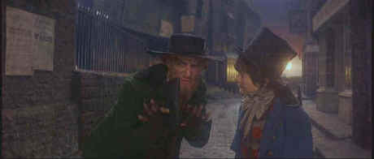

Columbia/1968/153m/ANA 2.35
 |
Fagin and The Artful Dodger plot an exit strategy©Columbia |
It’s a tall task to breathe
life into a musical born in the dark workhouse where Oliver grows up; taller even in the
shadow of Bill Sikes, the abusive one-dimensional thief who smothers any sense of
lightness in this musical. There are some captivating musical numbers. "Consider
Yourself" is a tour de force and "Oom-Pah-Pah" has great energy as
performed by Shani Wallis in the role of Nancy.
Mark Lester has the chore of making something out of the saintly
Oliver. The boy lacks screen presence and consistently pales in comparison to the rest of
the cast. Ron Moody does a grand Fagin, dancing and singing with a center derived from his
character. Jack Wild does wonders with The Artful Dodger while Oliver Reed glowers his way
through Bill Sikes.
It’s interesting to compare Oliver to another Reed
film, Odd Man Out, also newly released on DVD. The film about a bungled IRA bank
robbery takes place almost wholly at night. With almost dreamlike photography and a
magnificent William Allyn score, Reed’s vision plays against the material. Oliver
lacks the scope of beauty in either music or photography.
Oliver is spread onto two sides of the DVD, the break
coming at the film's theatrical intermission. This break could not be placed more
appropriately, but it still means a trip to the player to flip the disc. Contrast is often
less than satisfactory on this DVD presentation of Oliver. Details have a tendency
to bloom against gray skies. The snow scenes appear too washed out and overall the DVD
feels under-saturated. The Dolby Digital 5:1 mix is very fine, presenting the music with
clarity and energy. Surround location is accurate and a sense of place is maintained.
Dialogue and songs are easy to understand.